This is the follow-up to #435. I have officially, finally, wrapped up active development on my most recent (and hopefully last) complete, bottom-up re-write of my Life Tracker/Personal Data Warehouse. This post is about that Project and what it’s been like to keep pretty good tabs on the last 10+ years of my life.
So strap in or bail out now.
10 Years Tracked
I’ve already written several1 times describing “The Life Tracker” before, so I’ll skip some of the pleasantries. Here’s it in a 🥜:
This post is a brief celebration and retrospective on having hit the 10 year mark.
Growing Pains
Out the gate I did a pretty good job of organizing the system. My goals were well thought out. I iterated on how the system worked where I found deficiencies. I developed an increasingly well-honed system… up until the 5-year anniversary. I then spent 5 years in tinker town trying to make something that seems incredibly simple on the surface work out.
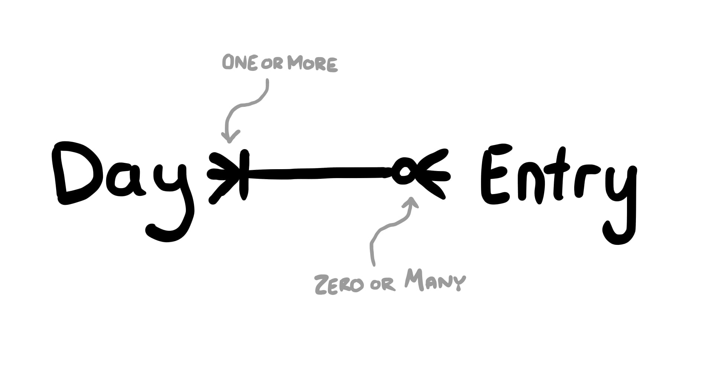
It turns out cardinality is one of the single hardest concepts to engineer a system around.
5 years ago, in order to satisfy my desire to track some things that may happen multiple times per day (e.g. movies I watched), I decided to grow beyond my “everything in one big spreadsheet” system. I’ll be honest, I’m pretty sure it was better before it got so complicated. That problem could have been solved with orders of magnitude less effort & fewer lines of code.
If I hadn’t gone through the pain, I wouldn’t have grown. I would have learned way less.
Current Tracking Targets
I’ve tracked well over one hundred different types of things over the past 10 years. Here’s what I’m still tracking today:
- Nightly review
- Textual summary of the day
- Satisfaction
- Health Status
- 🤖 Sleep location (city)
- 🤖 Sleep stats
- bed time
- wake time
- time in bed
- time asleep
- 🤖 Started driving (city)
- Drinks (soda, alcohol, energy drinks)
- Movies
- TV
- Videogames
- Date nights
- Saw family
- Saw friends
- Eating out
- 🤖 Forecast (expected high, low, rain, & wind)
- Pains & Treatments
- Place in Lawrence we visit
- New experiences
- Workouts
- 🤖 Runs & walks
- Quotes
- 🤖 Weight
Everything marked wit the 🤖 robot is tracked wholly passively through automations. Mostly using the iOS Shortcut app automations. Every single other tracking element other than the Nightly Review I can track using just my voice using Siri Shortucts (or online, whatever).
The Largest Coding Project Ever
This rewrite took a while. Frankly, way longer than I expect. Way longer than I was afraid of. Longer than I would have ever even imagined.
The process itself was arduous. In all, I wrote:
- A TypeScript library - now on NPM
- 3 Plugins - two of which are also on NPM
- A new website, pdw.one built on SvelteKit - front end and back end
- Somewhere in the neighborhood of 10,000 lines of code2, dozens of classes & components
- 3 UML Models - one of which was almost helpful
- 46 pages of hand drawn notes & plans in GoodNotes
- Several iterations of documentation for how things worked, all of which were scrapped eventually
I’m not planning on writing about “how it all works” here. I just added this page explaining how it works in more detail.
Desired Difficulty
There’s such a thing as “desired difficulty”. As anyone who’s ever used an invincibility cheat code in a video game will tell you, if things are too easy they lose their fun. If you aren’t struggling some, then there’s no meaning behind it all.
If this had all been an app I downloaded then blindly followed, there’s no chance I’d still be using it 10 years later. The pursuit of building this has been my longest surviving hobby, behind this blog you’re reading now.
That said, I’m very ready to move onto what’s next.
You’ll hear more about the Life Tracker some other day. But hopefully not for a while.
Top 5: A Decade of Charts!
6. Media
Tracking media is a large part of the reason I wanted to start tracking things that happen might happen multiple times per day. While I don’t have a decade of data for these, I do have 5 years. Which is still a ton.
Movies
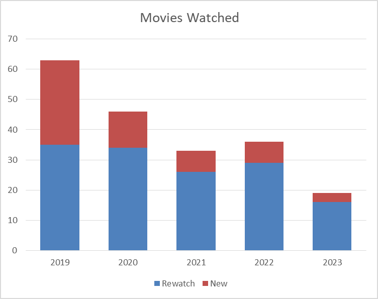
My movie watching has died off since I started tracking. I used to watch a movie every 5 days or so, now I’m down to a couple times a month. This includes Netflix and Video-on-Demand type movies, but does not include movies I put on for my kids to watch that I’m not really watching. My re-watching of movies I’ve already seen before has gone waaay down.
Television
Television I never really figured out “how” I wanted to track. If I binged something like “Squid Game” in one night, do I want to track that I had one session of watching Squid Game, or do I want to track the number of episodes of Squid Game? Or the time spent watching Squid Game? I wound up doing what was easiest, and just tracking sessions. Some of these were multiple episodes, some were not. But the gross trend is about right, less television overall:
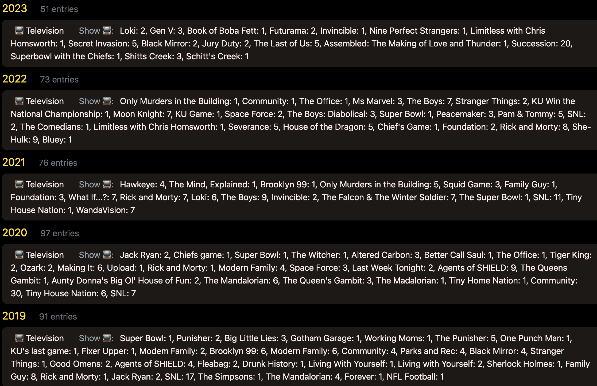
I couldn’t find a more elegant way to present those data. That’s a screen grab from pdw.one.
Hey every year I’ve watched a least one sports game. Sports!
Videogames
I’m not a big video gamer, it turns out.
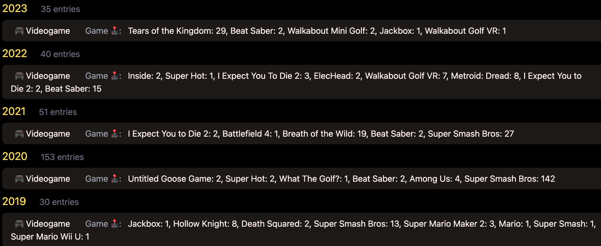
The only real takeaway here is that I play video games about 50 times a year, except when I started playing Super Smash Brothers online in 2020.
I wish I found an easy method to track the amount of time played in each game. The Switch has some functionality for that, but nothing I can easily tap into.
5. Weight
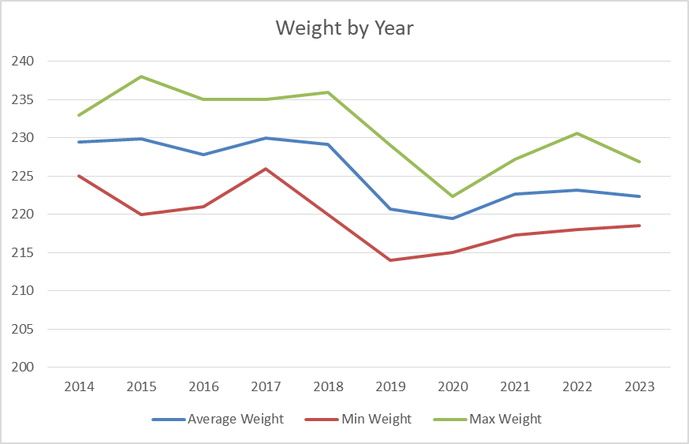
Honestly there’s not a ton to see here. My weight’s never been too dramatic. I included my min & max measures from each year to give a sense of range, but mostly cause otherwise this is a boring chart. Included because I figure most people would probably track this, so it would be a conspicuous absence.
4. Travel
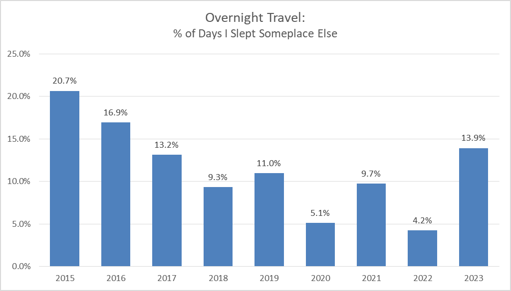
I track where I sleep each night as a proxy for travel. My phone wakes up at 3:30AM, pings my location & sends it to the cloud. For some reason, in 2022, I really stayed at home. That’s >20 days at home for every 1 day out. Crazy. Glad to see I’m trending up in 2023 - and the holidays haven’t even begun yet.
3. Sleep
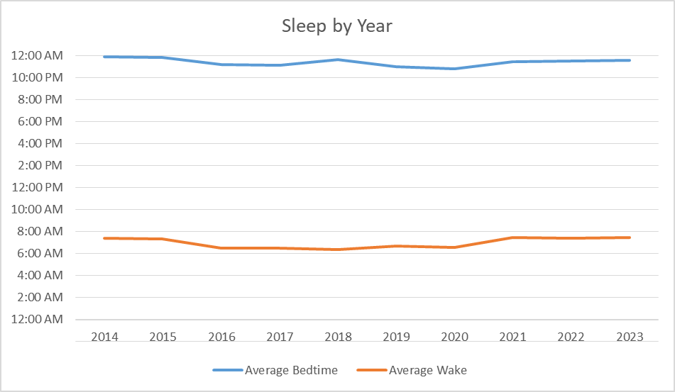
Aside from sleep location, I’ve tracked several other aspects of my sleep throughout the years. Before I bought an Oura ring in August 2019 my dataset was limited to when I went to bed, when I woke up, and the number of minutes that elapsed in between. Looking at “time in bed” (above), things look pretty consistent.
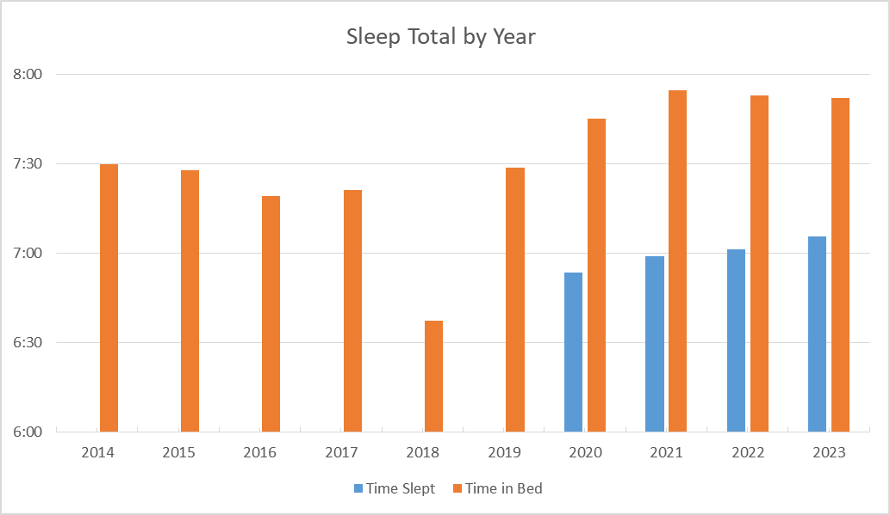
…since buying the Oura ring I’ve had access to time actually spent sleeping. This shows that, pretty consistently, don’t actually sleep for 45 minutes to 1 hour of the time I’m in bed. Interestingly, the birth of my first child corresponded with much less time in bed, but the birth of the second child corresponded with a permanent increase in my time spent in bed. Probably because two kids makes you tired.
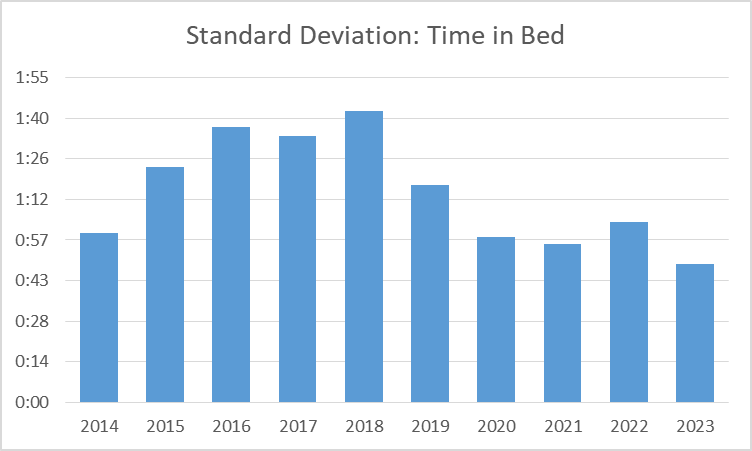
Mostly for pseudo-completeness, that’s the standard deviation of the time I spent in bed. For those of you who didn’t pay attention in stats class, standard deviation is a measure of how “spread out” the data are. The smaller the standard deviation, the closer we’d expect a typical data point to be to the mean. TL;DR - I’m getting more consistent with my bedtime since the birth of my boys.
2. Workouts by Type
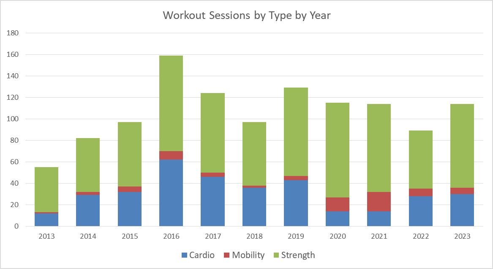
My interest in exercise jumped hard from 2015 to 2016, but aside from that has more or less stayed pretty consistent. I took up more yoga in 2020 and 2021 to make up for the lack of sports during the pandemic. I’m happy to say that the 2023 line is on pace to rival 2016 for my most active year.
1. Summary
Every night I write down a few sentences about how I used my day and how I’m feeling. It’s the most valuable thing I do. I can see “on this day” for the past 10 years of my life. There’s no way to summarize these data in a way that’s interesting or appropriate for public release. It’s there, and it’s the most valuable thing in all of this.
I do, however, have something to share. Each night I also rank how satisfied I was with the day on a scale from 1 to 10, and how my current health is doing. It’s probably the work of The Hedonic Treadmill, but my daily satisfaction rankings have not changed much since I started capturing them.
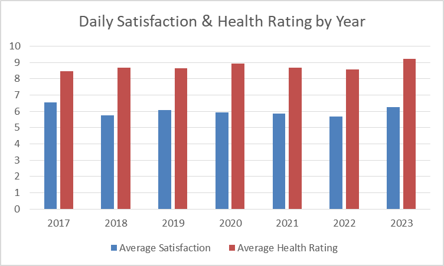
I do get progressively more satisifed with my days as the week goes. I think this result is probably typical. On a related note - tomorrow is Monday.
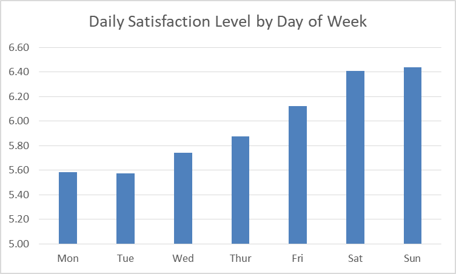
…and checking for seasonal affective disorder… no I think I’m good. I get less healthy through the summer, that was surprising - but it’s mostly in the noise.
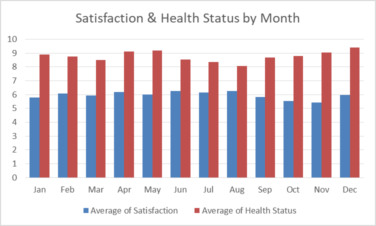
And that’s all that’s fit for public release.
Quote:
So what did you learn from doing all that? Whitney & K80
Footnotes
-
An incomplete list: #76 - introducing the concept, just before I started. #83 - after tracking one week, what I originally came up with. #92 - after one month. #205 - after one year, felt big at the time. #242 - 1.0 → 2.0, and already thinking about 3.0. #250 - 3.0. #339 - five years tracked, another deep-dive, @around v5.0 here. #386 - where things started getting complicated. #391 - seven years tracked, v8.0. #395 - the good one, an actual look at the history of this. #435 - where I missed the deadline I set for myself that i just crossed 6 months later ↩
-
10,000 surviving lines of code. In all I’d estimate much closer to 100,000 lines were written ↩